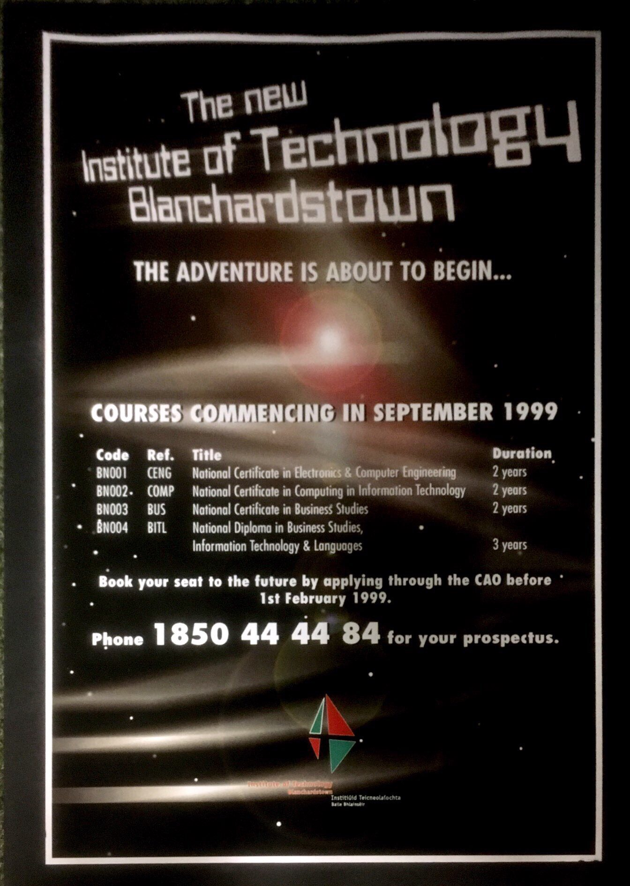
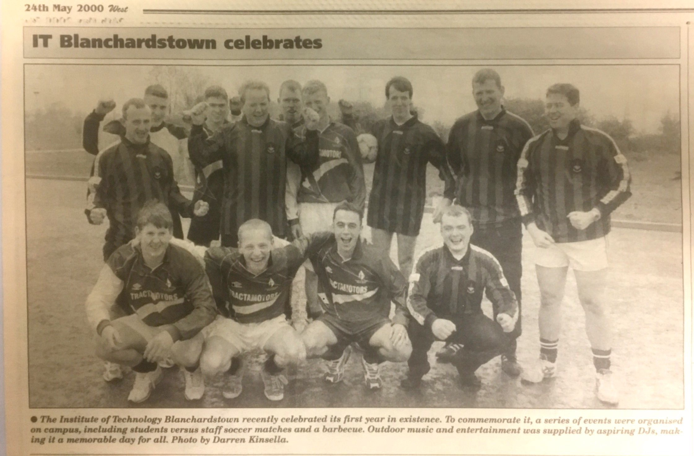
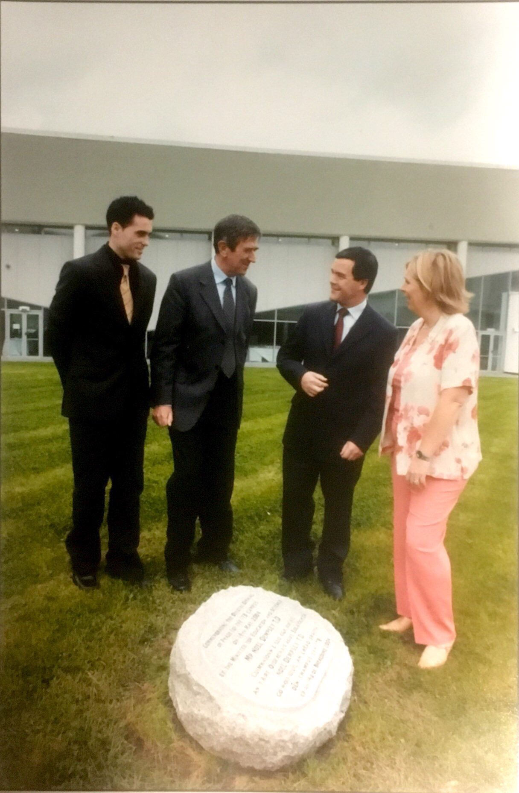

1999

ITB was first established in 1999. The A block was the first part of ITB to be built. There were only a handful of courses available at ITB at the time. There was a green and red logo and the only way of contacting the college was by phone. This was the beginning of ITB's journey.
2000

ITB celebrates it's first year. They commemorated this event by holding various events on campus such as a barbecue and a student-teacher football match.
2001

The first ever graduation from ITB takes place in an Draiocht in Blanchardstown.
2004

ITB is oficially opened with all staff and Noel Dempsey in attendance.
2006
A new logo is created for ITB.
2008

Creative Digital Media is oficially launched as a course at ITB
2010

ITB celebrates its 10th Anniversary with a huge celebration.
2018

In March 2018, ITB heard the exciting news that the application for TU Dublin had been passed by the Taoiseach Leo Varadkar. ITB, ITT and DIT begin on the new adventure that is merging together to form the first Technological University of Ireland.